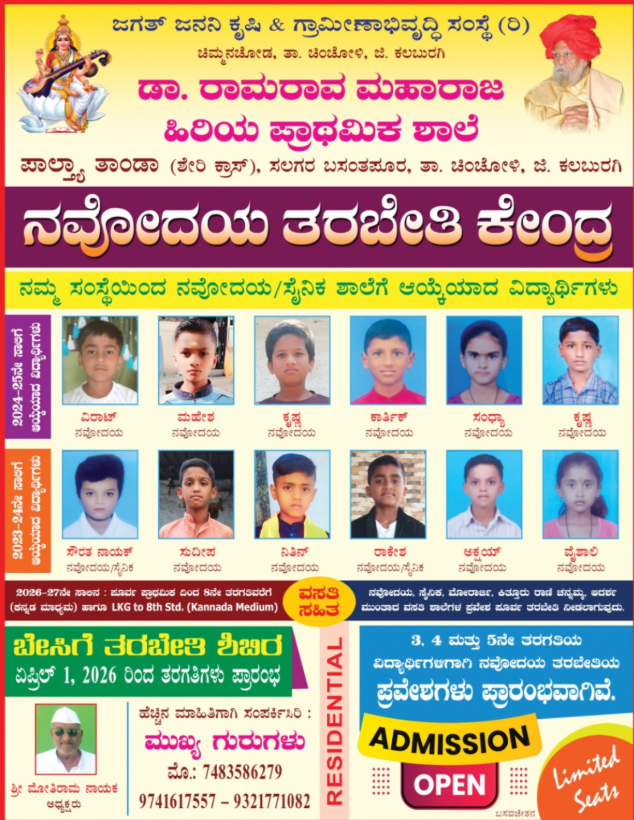

Jagath Janani Krishi & Gramina Abhivrudhi Samsthe (R)
Dr. Ramarao Maharaj Primary School
ಡಾ. ರಾಮರಾವ ಮಹಾರಾಜ ಹಿರಿಯ ಪ್ರಾಥಮಿಕ ಶಾಲೆPaltya Tanda, Seri Cross, Salgar Basantpur, Taluk Chincholi, Dist. Kalaburagi

Jagath Janani Krishi & Gramina Abhivrudhi Samsthe (R)
Paltya Tanda, Seri Cross, Salgar Basantpur, Taluk Chincholi, Dist. Kalaburagi
News & Updates
Latest news, achievements, events, and updates from our school.

This year marked our proudest milestone yet. Six students from our school cleared the Jawahar Navodaya Vidyalaya entrance examination, continuing our strong track record of preparing rural children for premier educational institutions. The achievement reflects months of dedicated coaching, disciplined study routines, and the hard work of our teaching staff.
Read Full Story →
We are pleased to announce that admissions for LKG to 8th Standard are now open. A residential summer camp begins April 1, 2026. Seats are strictly limited.
Enquire Now →
Students performed cultural programs and parades marking India's 76th Republic Day. The event was attended by parents, teachers, and local community members.
Read More →
Over 30 student-built projects were displayed at our annual science fair, covering topics in environment, agriculture, and everyday science. A wonderful display of curiosity.
Read More →
Five students successfully cleared the Sainik School entrance exam, a testament to the quality of coaching and the dedication of our students and staff throughout the year.
Read More →
From morning assembly and study hours to evening sports and meals — a structured daily routine that builds discipline, teamwork, and academic focus in our boarding students.
Read More →
Students participated in the flag hoisting ceremony, followed by speeches, songs, and a cultural showcase celebrating India's 78th Independence Day at our school grounds.
Read More →